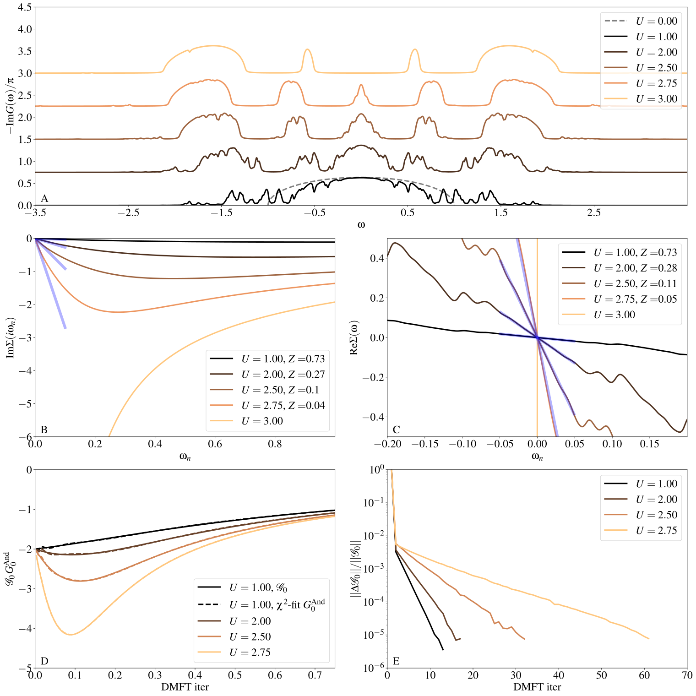

Solving Dynamical Mean-Field Theory with EDIpack
In this section we take a step further to show how to integrate the EDIpack as a solver for Dynamical Mean-Field Theory calculations. Specifically, here we discuss the step-by-step implementation of a Fortran program (see below) solving this model using DMFT with the EDIpack exact diagonalization algorithm at \(T=0\).
Similar to the previous section, we consider a Fermi-Hubbard model defined on a Bethe lattice DOS \(\rho(x)=\frac{1}{2D}\sqrt{D^2-x^2}\). The preamble of the program includes variable definitions (a old-looking Fortran specialty) and input file read.
Source code
program ed_hm_bethe
USE EDIPACK
USE SCIFOR
USE DMFT_TOOLS
implicit none
!> Number of discretization points for the Bethe DOS
integer,parameter :: Le=5000
!> Bethe half-bandwidth = energy unit
real(8),parameter :: D=1d0
!> Bethe DOS and linear dispersion
real(8),dimension(Le) :: DOS
real(8),dimension(Le) :: ene
!>Bath:
real(8),allocatable :: Bath(:)
!> local dynamical functions, rank-5 [Nspin,Nspin,Norb,Norb,L]
! (we could use other format )
complex(8),allocatable,dimension(:,:,:,:,:) :: Weiss,Smats,Sreal,Gmats,Greal,Weiss_
!> input file
character(len=16) :: finput
!> Use SciFortran parser to retrieve the name of input file
call parse_cmd_variable(finput,"FINPUT",default='inputED.conf')
!> READ THE input using EDIpack procedure:
call ed_read_input(trim(finput))
In this we load both the EDIpack and SciFortran libraries through
their main module EDIPACK and SCIFOR. We define
some local variables and read the input file
(default "inputED.conf") using the EDIpack function ed_read_input().
The next step is to construct the Bethe lattice DOS, we use SciFortran procedure to simplify the task:
Ene = linspace(-D,D,Le,mesh=de)
DOS = dens_bethe(Ene,D)
Once the local dynamical functions have been allocated, we can proceed
to allocate the user side bath bath and initialise the ED
solver by calling the ed_init_solver() procedure:
Nb=ed_get_bath_dimension()
allocate(bath(Nb))
call ed_init_solver(bath)
On input the bath is guessed from a flat distribution
centered around zero and with half-width ed_hw_bath. If a
file hfile with suffix .restart containing bath parameters is found in the run
directory then the bath is read from file.
We are now ready to perform a DMFT self-consistency cycle. In the present it looks like:
1iloop=0;converged=.false.
2do while(.not.converged.AND.iloop<nloop)
3 iloop=iloop+1
4
5 !> Solve the effective impurity problem
6 call ed_solve(bath)
7
8 !> Impurity Self-energy on Matsubara axis
9 call ed_get_sigma(Smats,'m')
10
11 !> Build a local Green's function using the Impurity Self-energy
12 wfreq = pi/beta*(2*arange(1,Lmats)-1) !automatic Fortran allocation
13 do i=1,Lmats
14 zeta= xi*wfreq(i)+xmu - Smats(1,1,1,1,i)
15 Gmats(1,1,1,1,i) = sum(DOS(:)/( zeta-Ene(:) ))*de ! One can do better than this of course
16 enddo
17
18 !> Self-consistency: get the new Weiss field:
19 Weiss(1,1,1,1,:) = one/(one/Gmats(1,1,1,1,:) + Smats(1,1,1,1,:))
20 !> Mix to avoid trapping:
21 if(iloop>1)Weiss = wmixing*Weiss + (1.d0-wmixing)*Weiss_
22
23 !> Close the self-consistency fitting the new bath:
24 call ed_chi2_fitgf(Weiss,bath,ispin=1)
25
26 !>Check convergence
27 converged =( sum(abs(Weiss(1,1,1,1,:)-Weiss_(1,1,1,1,:)))/sum(abs(Weiss(1,1,1,1,:))) )<dmft_error
28 Weiss_=Weiss
29enddo
The first step (line 6) is to call the ed_solve() procedure in
EDIpack which solve the quantum impurity problem defined by a given
input bath bath. On exit, all the ED related quantities are
stored in the memory, ready to be retrieved upon call.
For instance we retrieve the Matsubara self-energy
\(\Sigma(i\omega_n)\) using the procedure ed_get_sigma()
and store the result in the array Smats.
Next, lines 12-16, we evaluate the local Green's function \(\int^{D}_{-D} d\epsilon \frac{\rho(\epsilon)}{\zeta-\epsilon}\) where \(\zeta=i\omega_n+\mu-\Sigma(i\omega_n)\). This function is used to update the Weiss field \({\cal G}_0\) using the self-consistency relation (line 19):
The closing step of the DMFT cycle, specific of the Exact
Diagonalization solver, is to project the obtained Weiss field onto
the set of Anderson non-interacting Green's function
\(G^{And}_0(i\omega_n;\vec{b})\) describing a discretized bath of
Nb parameters. This step is performed using the complementary
method ed_chi2_fitgf(), which optimize the bath parameters
by minimizing the distance between such two functions. See line 24.
The cycle close with a simple error check on the Weiss field itself.
Results
In the following we present some results obtained by executing this
simple program varying the interaction strenght uloc.
Differently from the previous case of a quantum impurity embedded in a
given bath describing the progressive formation of a
strongly renormalized Fermi liquid state, here the DMFT
self-consistency allows to describe the transition from a correlated
metal to a Mott insulating state.
To illustrate this point, in panel A we report the evolution of the spectral function \(-{\rm Im}G(\omega)/\pi\) as a function of \(U\). Despite the spiky nature of the spectrum, due to the finite size (i.e. number of poles) of the discretized effective bath, one can clearly distinguish the renormalization of the central quasi-particle peak at low-energy and the concomitant formation of rather incoherent high-energy features which will develop into Hubbard bands for \(U>U_c\), with \(U_c\simeq 2.8D\).
{kind=link}
In the panels (B) and (C) we further discuss the metal-insulator transition by showing the evolution of the self-energy functions. In panel (B) we report the self-energy \({\rm Im}\Sigma(i\omega)\) on the Matsubara axis in the low energy regime. Increasing \(U\) we observe the progressive growth of this function until it takes a diverging behavior crossing the critical interaction strenght. We recall that this behavior can be observed on the Matsubara axis because of the particle-hole symmetry of the problem.
Using the relation:
we can extract the quasi-particle renormalization constant \(Z\) from the linear behavior of \({\rm Im}\Sigma(i\omega)\) near \(\omega=0\) in the metallic regime. The results are highlighted in the figure and the values of \(Z\) are reported in the legend.
Using the right hand side of the previous relation, we show in panel (C) the behavior of \({\rm Re}\Sigma(\omega)\) on the real axis around the Fermi level. Again, increasing \(U\) we observe the slope of the linear behavior to increase until the critical point is crossed and an insulating state is reached. On the real-axis this is signaled by the divergence of the imaginary part of the self-energy \({\rm Im}\Sigma(\omega) \rightarrow -\infty\) near the chemical potential, which here is set to zero by particle-hole symmetry. The corresponding real part shows a discontinuity visibile in the panel (C).
In panel (D) we show the results of the \(\chi^2\) fit procedure projecting the Weiss field \({\cal G}_0\) onto the space of Anderson non-interacting Green's functions with a finite number of parameters. The quality of the fit is very good, notwithstanding some small oscillations at low frequency related to the nature of the rational functions in \(G^{\rm And}\).
Finally, in panel (E) we show the critical slowing down of the solution upon approaching the Mott transition at \(U=U_c\). The data report the behavior of the convergence error check in terms of relative difference of the Weiss fields between two successive steps.
The program used in this quickstart is available here:
Hubbard Bethe Code
together with a list of bath files corresponding the solutions presented above:
Bath \(U=1.00\)
hamiltonian.restartBath \(U=2.00\)
hamiltonian.restartBath \(U=2.50\)
hamiltonian.restartBath \(U=3.00\)
hamiltonian.restartBath \(U=4.00\)
hamiltonian.restart
and one of the input files used above: InputFile